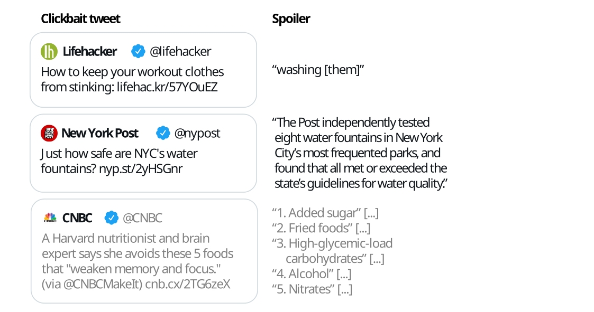

Clickbait Challenge at SemEval 2023 - Clickbait Spoiling
Synopsis
Clickbait posts link to web pages and advertise their content by arousing curiosity instead of providing informative summaries. Clickbait spoiling aims at generating short texts that satisfy the curiosity induced by a clickbait post. We invite you to participate in the Clickbait Challenge 2023 featuring two subtasks.
Task
The following figure illustrates some example inputs and the expected output for clickbait spoiling:
Important Dates (tentative)
- August 1, 2022: Submission System Opens
- December 1, 2022: Early bird software submission phase (optional)
- January 10, 2023: Submission deadline.
- February 2023: Participant paper submission
- March 2023: Peer review notification
- April 2023: Camera-ready participant papers submission
- Summer 2023: SemEval workshop (co-located with a major NLP conference)
The timezone of all deadlines is Anywhere on Earth.
Data [download]
The dataset contains the clickbait posts and manually cleaned versions of the linked documents, and extracted spoilers for each clickbait post. Additionally, the spoilers are categorized into three types: short phrase spoilers, longer passage spoilers, and multiple non-consecutive pieces of text.
The training and validation data is available for download on zenodo. This dataset contains contains 3,200 posts for training (the file training.jsonl) and 800 posts for validation (the file validation.jsonl). After training and validation, systems are evaluated on 1,000 test posts.
Input Format
The data comes in JSON Lines format (.jsonl) where each line contains a clickbait post and the manually cleaned version of the linked document. For each line, the goal is to classify the spoiler type needed (task 1), and/or to generate the spoiler (task 2).
For each entry in the training and validation dataset, the following fields are available:
uuid: The uuid of the dataset entry.postText: The text of the clickbait post which is to be spoiled.targetParagraphs: The main content of the linked web page to classify the spoiler type (task 1) and to generate the spoiler (task 2). Consists of the paragraphs of manually extracted main content.targetTitle: The title of the linked web page to classify the spoiler type (task 1) and to generate the spoiler (task 2).targetUrl: The URL of the linked web page.humanSpoiler: The human generated spoiler (abstractive) for the clickbait post from the linked web page. This field is only available in the training and validation dataset (not during test).spoiler: The human extracted spoiler for the clickbait post from the linked web page. This field is only available in the training and validation dataset (not during test).spoilerPositions: The position of the human extracted spoiler for the clickbait post from the linked web page. This field is only available in the training and validation dataset (not during test).tags: The spoiler type (might be "phrase", "passage", or "multi") that is to be classified in task 1 (spoiler type classification), This field is only available in the training and validation dataset (not during test).- Some fields contain additional metainformation about the entry but are unused:
postId,postPlatform,targetDescription,targetKeywords,targetMedia.
The following is a simplified entry in the dataset (line breaks added for readability):
{
"uuid": "0af11f6b-c889-4520-9372-66ba25cb7657",
"postText": ["Wes Welker Wanted Dinner With Tom Brady, But Patriots QB Had Better Idea"],
"targetParagraphs": [
"It’ll be just like old times this weekend for Tom Brady and Wes Welker.",
"Welker revealed Friday morning on a Miami radio station that he contacted Brady because he’ll be in town for Sunday’s game between the New England Patriots and Miami Dolphins at Gillette Stadium. It seemed like a perfect opportunity for the two to catch up.",
"But Brady’s definition of \"catching up\" involves far more than just a meal. In fact, it involves some literal \"catching\" as the Patriots quarterback looks to stay sharp during his four-game Deflategate suspension.",
"\"I hit him up to do dinner Saturday night. He’s like, ‘I’m going to be flying in from Ann Arbor later (after the Michigan-Colorado football game), but how about that morning we go throw?’ \" Welker said on WQAM, per The Boston Globe. \"And I’m just sitting there, I’m like, ‘I was just thinking about dinner, but yeah, sure. I’ll get over there early and we can throw a little bit.’ \"",
"Welker was one of Brady’s favorite targets for six seasons from 2007 to 2012. It’s understandable him and Brady want to meet with both being in the same area. But Brady typically is all business during football season. Welker probably should have known what he was getting into when reaching out to his buddy.",
"\"That’s the only thing we really have planned,\" Welker said of his upcoming workout with Brady. \"It’s just funny. I’m sitting there trying to have dinner. ‘Hey, get your ass up here and let’s go throw.’ I’m like, ‘Aw jeez, man.’ He’s going to have me running like 2-minute drills in his backyard or something.\"",
"Maybe Brady will put a good word in for Welker down in Foxboro if the former Patriots wide receiver impresses him enough."
],
"targetTitle": "Wes Welker Wanted Dinner With Tom Brady, But Patriots QB Had A Better Idea",
"targetUrl": "http://nesn.com/2016/09/wes-welker-wanted-dinner-with-tom-brady-but-patriots-qb-had-better-idea/",
"spoiler": ["how about that morning we go throw?"],
"spoilerPositions": [[[3, 151], [3, 186]]],
"tags": ["passage"]
}
Output Format [validator]
The description of the output format will be announced soon.
Baselines
We will publish baselines (source code and docker images with models trained and fine-tuned on the official training and testing data) soon.
Evaluation [code]
The description of the evaluation will be announced soon.
Submission
The description of submission requirements will be announced soon.